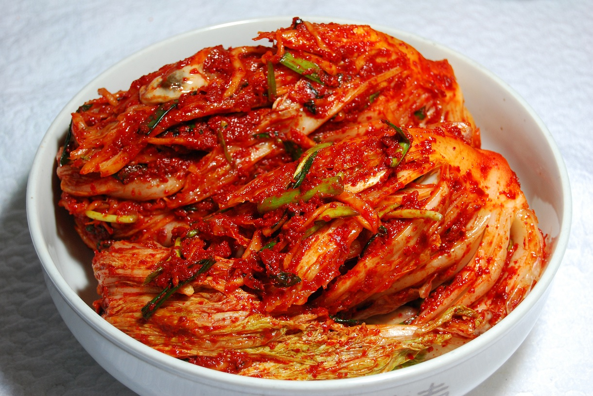
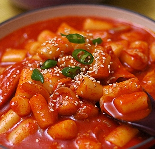

Authentic Korean Food
Kimchi
Kimchi is the most popular side dish in Korea. It is a traditional fermented side dish made of vegetables with seasoning. It is often spicy, but there are many variations for those who prefer a milder palate. Kimchi is notorious with its offensive odor. The most common main ingredients are made from napa cabbage, radish, cucumber, or scallion.
Bulgogi

Bulgogi is a dish that consists of grilled marinated beef. The term Bulgogi can be translated into “fire”. It is made from thin slices of prime beef. Before cooking the meat, it is marinated to give it the tenderness and flavour that it is known for. It is generally marinated with soy sauce, sesame oil, garlic, sugar, pepper, and many other ingredients.
Tteokbokki
Tteokbokki is a very popular Korean dish. It is often eaten as a snack and is made from rice cake, fish cake, and red chili paste. It can frequently be purchased from street vendors in Korea. There are different variations of this dish, as the recipes are always evolving to suit the changing tastes of its fans.